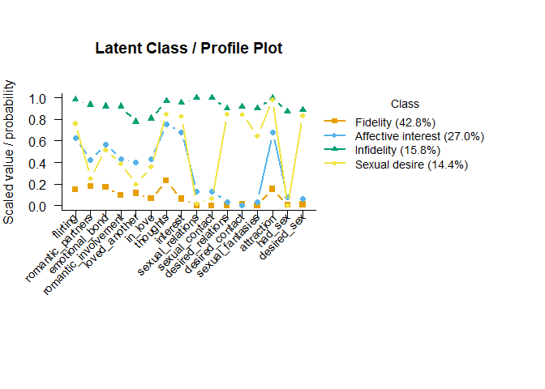

Latent class and latent profile analysis for applied researchers.
mixtureEM helps you find hidden subgroups in your data and describe them (Collins & Lanza, 2010).
- If you have ever run an LCA, assigned everyone to their most likely class, and then run ANOVAs or chi-squares on the labels, this package exists for you. The step that is easiest to get wrong — relating classes to external variables — is the one mixtureEM automates correctly, using the bias-adjusted three-step estimators from the methodological literature (Bakk et al., 2014; Vermunt, 2010).
- If you have never run an LCA, this package exists for you too. Every step ships with a sensible default, and the output reads like the table you would put in a paper, so you do not need the estimation theory memorized to get correct answers out.
Installation
You can install the development version from GitHub using the pak package:
# install.packages("pak")
pak::pkg_install("pdvalencia/mixtureEM")Quick start
A complete analysis takes just a handful of calls. Using the bundled ventura_leon data — 16 yes/no infidelity items from 400 young adults (run ?ventura_leon for dataset details) — you can fit a model and view the class sizes:
library(mixtureEM)
items <- ventura_leon[, 7:22] # the 16 infidelity items
fit <- fit_mixture(items, n_classes = 4, n_init = 20, random_state = 1)
class_sizes(fit)
#> class proportion n_expected n_modal
#> 1 1 0.4279122 171.16487 173
#> 2 2 0.2697511 107.90043 106
#> 3 3 0.1579645 63.18579 63
#> 4 4 0.1443723 57.74891 58You can then easily plot the item-response probabilities to interpret the classes:

Choosing how many classes to keep, reading the full item-response table, relating classes to covariates with a bias correction, and describing them by a distal outcome are each one function call away. The
ventura_leonworked example walks through all of it on this exact fit.
What it covers
| Analysis | Function | Worked example |
|---|---|---|
| Latent class analysis (binary / categorical / count items) | fit_mixture() |
ventura_leon |
| Latent profile analysis (continuous items), missing data, multiple groups | fit_mixture() |
janousch |
| Choosing the number of classes (ICs, BLRT, fit diagnostics) |
compare_mixtures(), blrt()
|
class_enumeration |
| Predictors of class membership (3-step ML) | add_covariates() |
ventura_leon |
| Distal outcomes (BCH / ML) | add_outcome() |
ventura_leon |
| Repeated-measures LCA (trajectory classes) | fit_rmlca() |
rmlca |
| Latent transition analysis, mover-stayer models | fit_lta() |
lta |
| Latent class growth analysis, growth mixture models |
fit_lcga(), fit_gmm()
|
growth_mixture |
| Complex survey designs (weights, strata, clusters) | every model | survey_lca |
Also included: mixed measurement models (binary + continuous + count indicators in one model), full-information missing-data handling everywhere, absolute and local fit diagnostics (absolute_fit(), bivariate_residuals()), classification diagnostics, and standard errors that account for the classes being estimated rather than observed (?covariate_se).
Design principles
-
Conceptual workflow. Choose a model, then examine covariates and outcomes on that fitted model —
add_covariates(fit, ...)andadd_outcome(fit, ...)never re-estimate the classes you already inspected. - Sound defaults. Stepwise analyses apply the recommended bias correction and uncertainty-aware standard errors unless you say otherwise; where a default has a literature, the default follows it.
- Readable output, reusable numbers. Summaries print as formatted tables and return tidy data frames.
- No dependency stack. Built using base R only, meaning it installs cleanly anywhere R does.
Citation
If you use mixtureEM in published research, please cite it as:
Valencia, P. D. (2026). mixtureEM: Latent class and profile analysis via mixture modelling (Version 0.2.0) [R package]. https://github.com/pdvalencia/mixtureEM
Acknowledgements
mixtureEM draws strong inspiration from the Python package StepMix, which pioneered open-source, bias-adjusted multi-step estimation of generalised mixture models with external variables. If you make use of these methods, please also consider citing the StepMix paper:
Morin, S., Legault, R., Laliberte, F., Bakk, Z., Giguère, C.-E., de la Sablonnière, R., & Lacourse, E. (2025). StepMix: A Python package for pseudo-likelihood estimation of generalised mixture models with external variables. Journal of Statistical Software, 113(8), 1–39. https://doi.org/10.18637/jss.v113.i08
References
Bakk, Z., Oberski, D. L., & Vermunt, J. K. (2014). Relating latent class assignments to external variables: Standard errors for correct inference. Political Analysis, 22(4), 520–540. https://doi.org/10.1093/pan/mpu003
Collins, L. M., & Lanza, S. T. (2010). Latent class and latent transition analysis: With applications in the social, behavioral, and health sciences. Wiley.
Ventura-León, J., Reyes, A., Valencia, P. D., Tocto-Muñoz, S., Gamboa-Melgar, G., Ruiz-Castro, J., & Lino-Cruz, C. (2025). Exploring infidelity behavior patterns in a sample of Peruvian young adults: A latent class analysis. Journal of Marital and Family Therapy, 51(4), e70066. https://doi.org/10.1111/jmft.70066
Vermunt, J. K. (2010). Latent class modeling with covariates: Two improved three-step approaches. Political Analysis, 18(4), 450–469. https://doi.org/10.1093/pan/mpq025